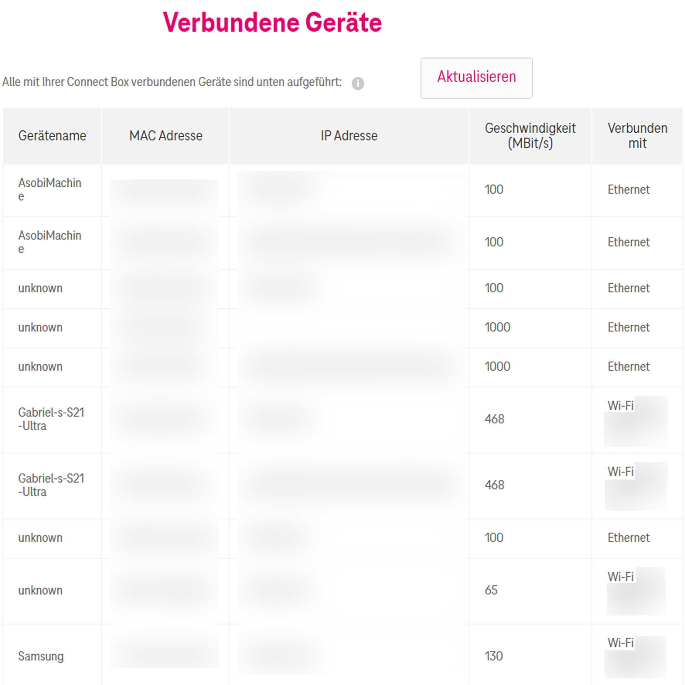

Servus,
Seit einiger Zeit habe ich bei mehreren meiner Geräte das Problem, dass ich statt meinen normalen 500 Mbit, nur 80-100 Mbit bekomme. Nun ist mir aufgefallen, dass in der Weboberfläche unter "Verbundene Geräte" bei den gedrosselten Geräten "100 Mbit" als Geschwindigkeit angezeigt wird.
Wenn ich den Router resete, wird das wieder gefixt und zeigt dann z.B. bei meinem PC "1000Mbit" an, was auch die korrekte maximalgeschwindigkeit ist, aber nur für 1-2 Tage, anschließend ist es wieder gedrosselt.
Könnte es sein, dass der Router automatisch Verbindungen drosselt, weil ich zu viele verbundene Geräte habe? (Dazu muss ich aber sagen, dass ein paar davon doppelt in der Liste stehen.
Hättet ihr eventuell sonst noch eine Idee, woran das liegen könnte?

Was ich mir denken könnte, wäre, dass die Box entweder damit versucht die Temperatur in den Griff zu bekommen oder dass es sich um einen Defekt handelt.
Wie viele Geräte sind denn mit der Box verbunden?
Hallo @Asobi ,
soweit ich informiert bin, steht in der Spalte "Geschwindigkeit" die maximal erreichbare Bandbreite, die das verbundene Gerät erreichen kann. Es liegt also in diesem Fall nicht am Router. Beachte bitte auch, dass sich die Gesamtbandbreite, sprich deine im Vertrag inkludierten 1.000 Mbit/s auf die verbundenen Geräte aufteilen. Somit erreichst du, wenn du bei mehreren Geräten einen Speedtest machst, nicht überall 1.000 MBit/s, sondern vielleicht nur 4x max. 250 Mbit/s (überspitzt gesagt). LG, JD.
Oder Bei Ethernet - du hast evtl. ein Problem mit einem Kabel?
Und deshalb wird aufgrund von Datenübertragungsfehlern die Speed runter gesetzt?
{kind=link}